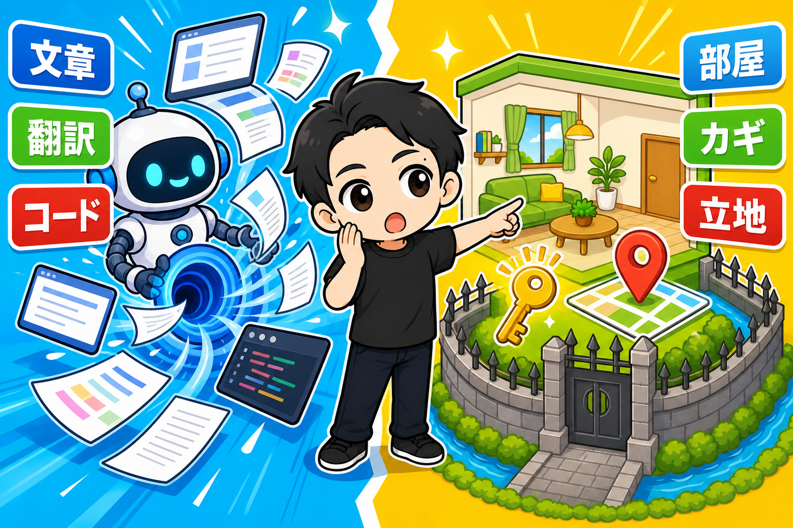
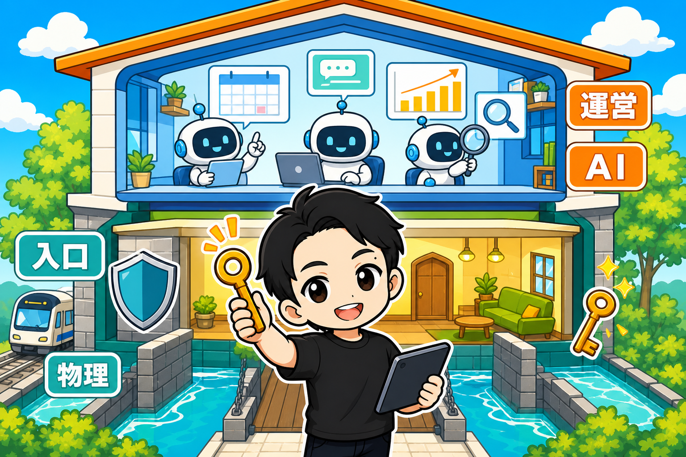

フリーランスの案件が、体感で「3年前の3分の1」。
そんな報道が出ていました。
日経電子版の記事です。


AIの普及で、フリーランスから正社員にもどる人が増えている。
企業も、フリーランスだった人を正社員として積極的に採用している。
この流れ、ぼくは他人事だと思えませんでした。
「手に職」が、追いかけられる時代
ひと昔前まで、「手に職をつけて独立」は最強のキャリアでした。
コーディング、ライティング、翻訳、動画編集、デザイン。
スキルを磨けば、会社に頼らず食べていける。
でも、いまAIがいちばん得意なのが、まさにこの領域です。
スキルの切り売りは、AIとの奪い合いになる。
フリーランスとは、労働を売る働き方です。
その労働そのものを、AIが安く・速く・無限にこなすようになった。
案件が3分の1になるのは、残酷ですが、理屈どおりなんです。
正社員にもどるのは「合理的」。でも
じゃあ正社員にもどるのが正解なのか。
ぼくは、合理的な選択だと思います。
会社という「箱」に入れば、AIの波を組織が受け止めてくれる。
でも、ひとつだけ気になります。
その会社の仕事は、AIに食われないんでしたっけ?
会社の社畜がイヤだから、フリーランスになったのでは?
だからぼくは、第3の道を選びました。
AIが、どうしても持てないもの

ぼくはレンタルスペースを23店舗やってきました(売上は累計1.5億円を超えました)。
そしていま、レンタルスペースの副業を推しています。
なぜか。
AIと相性が、わるいからです。
AIは文章を書けます。翻訳もコードも書けます。
でも——
部屋を貸せません。
カギを置けません。
駅から3分の立地に、出店できません。
「物理」があるものは、AIに代替されないんです。
これが、ぼくの言う「物理の堀」です。
そして運営は、AIにやらせる

ここからが、この事業のずるいところです。
入口はAIに食われない。
なのに、運営はAIと相性バツグンなんです。
予約管理、外注さんが使うアプリ作成、顧客対応のメッセージ、売上の集計、競合の調査。
レンタルスペースの運営業務は、ほぼ全部が文章と数字。
つまり、AIの得意領域です。
もうひとつの副業のeBay輸出では、AI社員が在庫をなんなら10分に1回巡回しています。
レンスペも同じで、ぼくの実働はどんどん減っています。
AIに食われない事業を、AIをつかって運営する。
この組み合わせが、いまの時代のいちばん強い型だと思っています。
「仕事」を売るか、「商売」を持つか
整理します。
AIが得意な領域で労働を売る=いちばん波をかぶる働き方。
AIが苦手な「物理」で商売を持つ=波をかぶらず、むしろAIが味方になる働き方。
同じAIが、片方には脅威で、片方には資産なんです。
フリーランスから会社員へ、という流れは続くと思います。
でも、本心は会社員にもどりたくない。
だって社畜がイヤだからフリーランスになったんだから。
小さくてもいいから、物理のある「商売」を持つ。
そういう選択肢も、あります。
▼レンタルスペースの始め方は、ぜんぶ1冊にまとめてあります
物件選び・収支の計算・開業・運営・拡大まで。累計23店舗の経験を、全9部と付録15点のWeb教材に書きました。
第0部は登録なしで全文読めます。
📘 『レンタルスペース経営の教科書』

販売価格は3部売れるごとに2,000円ずつ値上がりします（上限あり）。内容・最新価格は販売ページをご確認ください。
▼もう1つの副業、AI社員だけのeBay輸出店の実録🐹

▼ブログ(レンスペ×eBay、全記事まとめ)